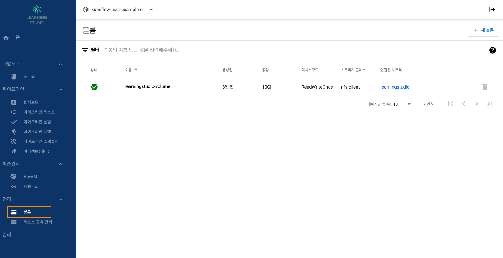
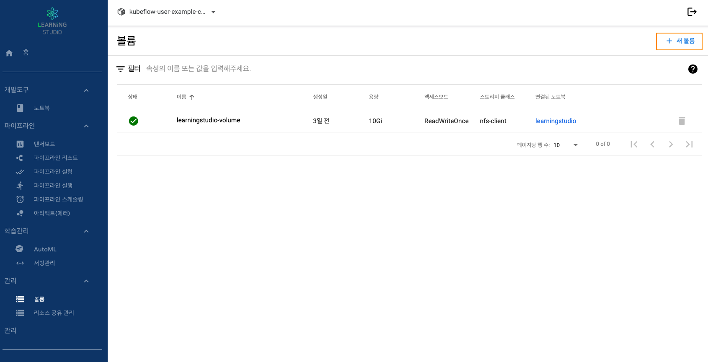
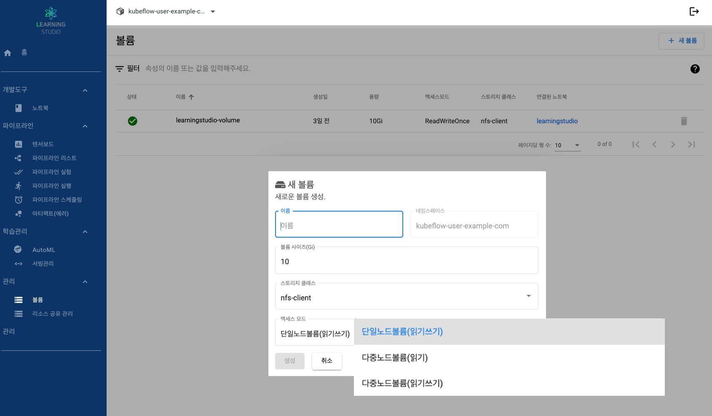
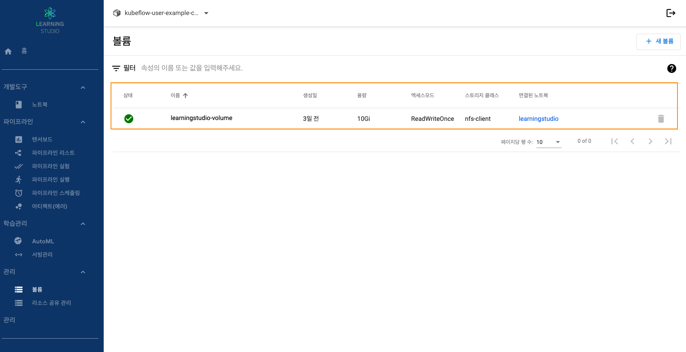
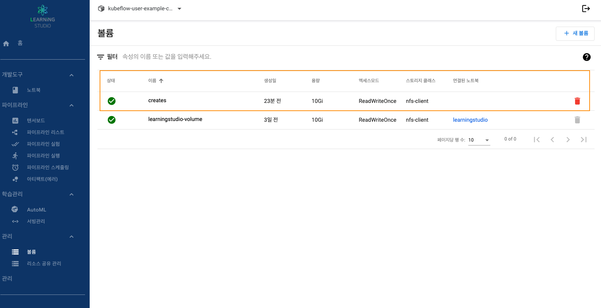

Step 1. 볼륨 리스트
1. 러닝스튜디오 대시보드 접속합니다.
2. 좌측에 메뉴에서 관리 → 볼륨 탭을 선택입니다.
Step 2. 볼륨 생성
1) 새로운 볼륨 생성
- 생성된 볼륨을 통해 노트북 생성 시 마운트 가능
- 마운트용 볼륨으로도 사용 가능
 
| 항목 | 설명 |
|---|---|
| 이름 | 볼륨 이름 지정 |
| 네임스페이스 | 로그인된 네임스페이스(자동 입력) |
| 볼륨 사이즈 | 볼륨 사이즈 지정 |
| 스토리지 클래스 | 쿠버네티스에서 지정한 스토리지 클래스 이름 |
| 엑세스 모드 | 단일노드볼륨(읽기쓰기) : 하나의 노드에서 읽기-쓰기 마운트 가능 |
| 다중노드볼륨(읽기) : 다수의 노드에서 읽기 전용 마운트 가능 | |
| 다중노드볼륨(읽기쓰기) : 다수의 노드에서 읽기-쓰기 마운트 가능 |

Step 3. 볼륨 관리
1) 노트북 생성시 만들어진 볼륨 리스트
2) 사용자가 직접 생성할 볼륨
-

3) 볼륨 항목 설명
| 항목 | 설명 |
|---|---|
| 상태 | 볼륨 상태 |
| 이름 | 볼륨 이름 |
| 생성일 | 볼륨 생성일 |
| 용량 | 볼륨 용량 |
| 스토리지 클래스 | 쿠버네티스에서 지정한 스토리지 클래스 이름 |
| 연결된 노트북 | 노트북 연결 유무에 대한 항목이며, 연결시 노트북 이름 표기 |
| 삭제 버튼 | 볼륨 삭제 버튼(노트북 연결시에는 삭제 불가능) |
| 삭제 가능 : 빨간색 아이콘 | |
| 삭제 불가능 : 회색 아이콘 |
Step 4. 볼륨 삭제
- 삭제할 AutoML 리스트에서 "휴지통" 아이콘 클릭